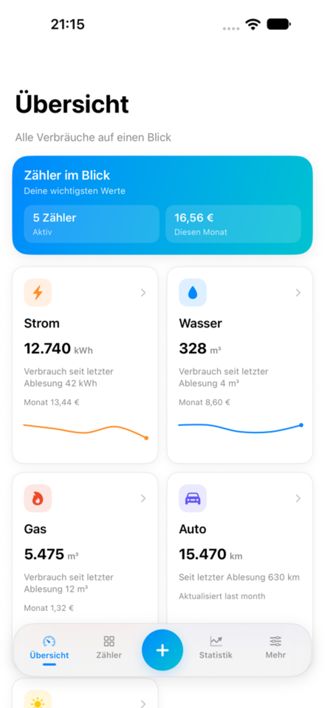
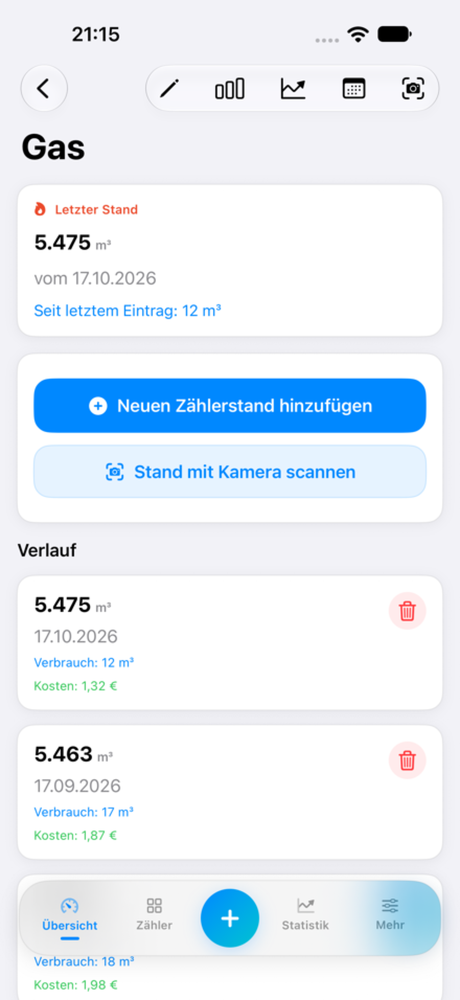

Ein Wert. Alles dabei.
Lege deine Zähler mit passender Kategorie und Einheit an und trage neue Stände manuell ein.
DEIN ALLTAG. DEINE ZÄHLER.
Strom, Wasser, Gas und mehr: Erfasse deine Zählerstände an einem Ort. Verstehe, was du verbrauchst – und was es kostet.

WENIGER ZETTEL. MEHR ÜBERBLICK.
Vom neuen Zählerstand bis zum Monatsverlauf: Deine Werte bekommen einen festen Platz.
Lege deine Zähler mit passender Kategorie und Einheit an und trage neue Stände manuell ein.
Verfolge Verbrauch, Monatswerte und Kosten. Diagramme machen den Verlauf deiner Ablesungen sichtbar.
Exportiere Werte als CSV oder sichere ein vollständiges JSON-Backup. Bestehende Daten kannst du importieren.
SO SIEHT KLARHEIT AUS
Echte Ansichten aus dem Quellprojekt.
Die gezeigten Werte sind Beispieldaten.
Aktueller Stand, Verbrauch und Kosten: In der Detailansicht findest du die Werte eines Zählers zusammen mit seinem Verlauf.

ZÄHLERBLICK PRO
Die tägliche Erfassung ist der Anfang. Pro ergänzt sie um weitere Auswertungen, Berichte und Komfort beim Ablesen.
Optionaler In-App-KaufSmart-Auswertungen, Monatsprognosen und Jahresvergleiche.
Belegfotos, Notizen, OCR per Kamera und optionale Standortnachweise.
PDF-Jahresberichte zum Teilen oder Archivieren und Widgets für den Homescreen.
DEINE WERTE. DEIN GERÄT.
Deine Zählerdaten werden lokal auf dem Gerät gespeichert. Kamera, Fotos und Standort nutzt du nur, wenn du sie aktiv hinzufügst. iCloud-Synchronisierung ist im untersuchten Projekt derzeit deaktiviert.
Datenschutz der App lesen ↗Strom, Wasser, Gas, Einspeisung, Fahrzeugstände und eigene Kategorien mit individueller Einheit.
Du erfasst Zählerstände selbst. Mit Pro steht zusätzlich eine Kamera-OCR zur Zahlenerkennung zur Verfügung. Erkannte Werte solltest du vor dem Speichern prüfen.
Über den Export kannst du ein vollständiges JSON-Backup erstellen und später wieder importieren. CSV steht für die Weiterverarbeitung deiner Werte bereit.
Schreibe an hej@dee-wayner.com. Weitere Hinweise findest du auf der Supportseite.
EIN GUTER BLICK AUF DEINEN ALLTAG.
Zählerblick für dein iPhone entdecken.
Im App Store ansehen ↗